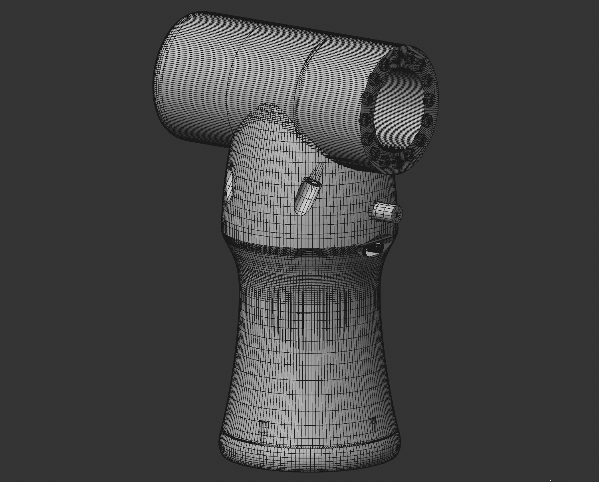

Projekty

Analizator utworów w radiu
Zainspirowany irytującą powtarzalnością utworów w radiu, napisałem program do analizy ciągłości emisji muzyki. Skrypt w Pythonie, uruchomiony na Raspberry Pi, łączy się z API stacji radiowej i zapisuje dane o utworach w formacie JSON na lokalnym serwerze NAS. Dzięki temu urządzenie może pracować 24/7 bez przerwy i bez większego obciążenia systemu. Drugi skrypt, uruchamiany na komputerze, przetwarza te dane w formę wizualną, tworząc czytelne i intuicyjne przedstawienie informacji o odtwarzanych utworach. Rozwiązanie pozwala w prosty sposób monitorować powtarzalność muzyki i analizować emisję w czasie rzeczywistym.

Dmuchawa
Model stanowił pierwszą styczność z bezszczotkowymi silnikami, co umożliwiło zdobycie praktycznego doświadczenia w zakresie ich doboru, sterowania oraz integracji z układem zasilania. Zastosowano autorskie podejście do projektowania obudowy dmuchawy o podwyższonej wydajności, zoptymalizowanej pod kątem przepływu powietrza oraz efektywności pracy. Konstrukcję zasilono pakietem złożonym z trzech ogniw 18650 w konfiguracji 3S. Zintegrowano system ładowania przez USB C z obsługą standardu Quick Charge, co zapewnia wygodne i szybkie ładowanie przy zachowaniu kompaktowej formy urządzenia. Końcówkę dmuchawy wyposażono we wdrukowane magnesy, co umożliwia montaż wymiennych, nietypowych końcówek bez stosowania widocznych elementów mocujących. Rozwiązanie to pozwala zachować estetykę oraz minimalistyczny charakter konstrukcji.

Domowy ups
Opracowano obudowę dla ręcznie zbudowanego systemu UPS przeznaczonego do podtrzymania zasilania routera Wi-Fi oraz serwera NAS w przypadku przerwy w dostawie prądu. Konstrukcja została zaprojektowana z myślą o bezpieczeństwie, ergonomii oraz optymalnym rozmieszczeniu komponentów wewnętrznych. Do zasilania zastosowano pakiet ogniw w konfiguracji 3S5P, co zapewnia znaczną pojemność i umożliwia długotrwałe podtrzymanie zasilania w warunkach braku energii sieciowej, gwarantując ciągłość pracy kluczowych urządzeń domowych.

Elektryczna turbina
Zrealizowano kolejne podejście do dmuchawy, tym razem wykorzystując silnik trójfazowy bezpośrednio pochodzący z drona FPV klasy 5 cali. Śmigło zaprojektowano autorsko w celu maksymalizacji efektywności przepływu powietrza oraz wydajności całego układu. Urządzenie miało charakter turbo elektrycznego systemu dmuchającego, zasilanego ogniwami w konfiguracji 3S, przy maksymalnej orientacyjnej mocy około 200 W. Projekt pełnił funkcję proof of concept dla szybkiego pompowania materacy, basenów i balonów, pozwalając na praktyczne sprawdzenie koncepcji i wydajności zastosowanego napędu oraz układu dmuchawy.

Generator śnieżek
Napisałem program w języku OpenSCAD do automatycznego generowania śnieżek, który udostępniłem na MakerWorld. Generator oferuje praktycznie nieskończone kombinacje wzorów, pozwalając na tworzenie unikatowych modeli przy każdym użyciu. Dodatkowo wbudowane funkcje umożliwiają przygotowanie śnieżek z zawieszką lub jako podstawkę pod naczynia, co czyni projekt praktycznym i dekoracyjnym rozwiązaniem, idealnym na okres świąteczny.

Makieta modularnej szafy energetycznej
Wykonano miniaturowy model szafy elektroenergetycznej w skali 1:10, odwzorowując kluczowe elementy charakterystyczne dla standardów firmy, dla której powstało zlecenie. Model prezentuje system zasilania gwarantowanego z zachowaniem proporcji i funkcjonalności istotnych dla realnego urządzenia. Szafa została zaprojektowana w sposób modułowy, a zastosowanie elementów uniwersalnych pozwala na modyfikację rozmiaru modelu przy minimalnej zmianie poszczególnych komponentów, co zwiększa elastyczność i możliwości adaptacyjne projektu.

Mechanizm zębatki do samochodu rc
Opracowano element zębatki do samochodu zdalnie sterowanego z autorskimi modyfikacjami konstrukcyjnymi. Wprowadzono ulepszenia obejmujące między innymi poszerzenie osi skrętnej kół w celu zwiększenia stabilności oraz poprawy charakterystyki prowadzenia. Model wykonano na podstawie oryginalnego komponentu, przeprowadzając szczegółowe pomiary suwmiarką w celu zachowania zgodności wymiarowej oraz zapewnienia pełnej kompatybilności z istniejącym układem mechanicznym.

Mini dron 1s
Stworzono miniaturowy dron z autorsko zaprojektowaną ramą, wydrukowaną w technologii 3D z materiału PA12-CF w celu zwiększenia wytrzymałości i sztywności konstrukcji. Staranny dobór komponentów był kluczowy dla osiągnięcia optymalnych właściwości lotnych i stabilności podczas lotu. Dron zaprojektowano głównie w kategorii long range, zasilany pojedynczym ogniwem 18650 o wysokich parametrach rozładowania. Takie rozwiązanie pozwala na lot trwający ponad 20 minut bez przerwy, podczas gdy typowe ogniwa LiPo w podobnej konfiguracji wytrzymałyby jedynie 2–3 minuty, co znacząco podnosi efektywność i użyteczność urządzenia.

Model ruchomego czołgu
Wymodelowano czołg IS-7 w skali 1:30 z zachowaniem wysokiego poziomu detali oraz funkcjonalności mechanicznej. Kluczowe elementy konstrukcyjne, takie jak wieża, działo, koła i gąsienice, wykonano jako w pełni ruchome, co umożliwia realistyczne odwzorowanie pracy układu jezdnego i systemu uzbrojenia. W kolejnym etapie przewidziano elektryfikację modelu z wykorzystaniem silników szczotkowych, serwomechanizmów oraz kontrolera lotu stosowanego w systemach FPV. Planowana jest integracja kamery FPV, systemu automatycznego strzelania oraz symulacji spalin z użyciem grzałek sonicznych, co pozwoli uzyskać zaawansowany model zdalnie sterowany o wysokim poziomie realizmu i funkcjonalności.

Narożniki osłaniające drona
Zaprojektowano osłonę dedykowaną dla drona FPV klasy 5 cali, z naciskiem na ochronę kluczowych elementów konstrukcyjnych. Zastosowano niestandardowe podejście do zabezpieczenia ramion poprzez ich zintegrowaną osłonę wraz z dodatkowymi osłonami silników, co zwiększa odporność na uszkodzenia mechaniczne. Podczas projektowania szczególną uwagę poświęcono geometrii zewnętrznej, dążąc do uzyskania opływowej, aerodynamicznej formy. Konstrukcja łączy funkcję ochronną z minimalizacją oporów powietrza oraz zachowaniem estetyki i spójności wizualnej modelu.

Projekt powerbanka o dużej pojemności
Zaprojektowano powerbank o niestandardowych wymiarach, zwiększonej pojemności oraz wysokiej gęstości energii, zoptymalizowany pod kątem maksymalnego wykorzystania dostępnej przestrzeni w możliwie najmniejszej obudowie. Konstrukcja została opracowana z naciskiem na rzeczywistą wydajność energetyczną oraz transparentne parametry techniczne. Wewnątrz zastosowano dwanaście ogniw 21700 o pojemności 5000 mAh każde, co przekłada się na łączną energię rzędu około 230 Wh, w zależności od konfiguracji połączeń oraz napięcia nominalnego pakietu. Projekt powstał w odpowiedzi na powszechne zawyżanie parametrów w komercyjnych powerbankach i stanowi próbę stworzenia urządzenia o realnych, weryfikowalnych osiągach.

Urządzenie wykorzystujące moduł peltiera
W projekcie zrealizowano pierwsze podejście do zastosowania modułów Peltiera w kompaktowym urządzeniu chłodzącym. Konstrukcję przystosowano do zasilania napięciem 12 V lub przez USB C z obsługą Quick Charge 12 V, co zapewnia elastyczność użytkowania. Na potrzeby optymalizacji przepływu powietrza wewnątrz obudowy autorsko zaprojektowano i wymodelowano śmigło silnika, dostosowane do charakterystyki pracy układu chłodzenia. Projekt miał charakter proof of concept, ponieważ z punktu widzenia termodynamiki schłodzone powietrze opada, w związku z czym puszka ustawiona na urządzeniu ulega wychłodzeniu głównie w dolnej części, bez równomiernego obniżenia temperatury na całej powierzchni.